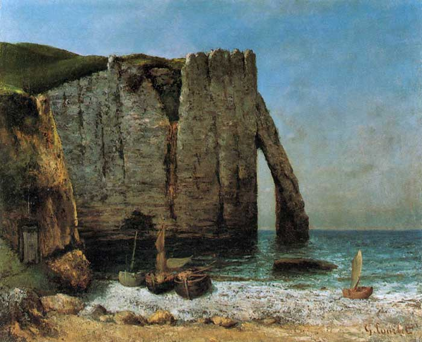
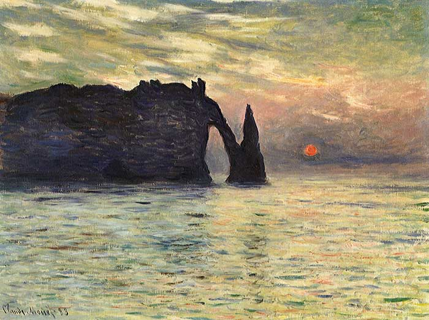
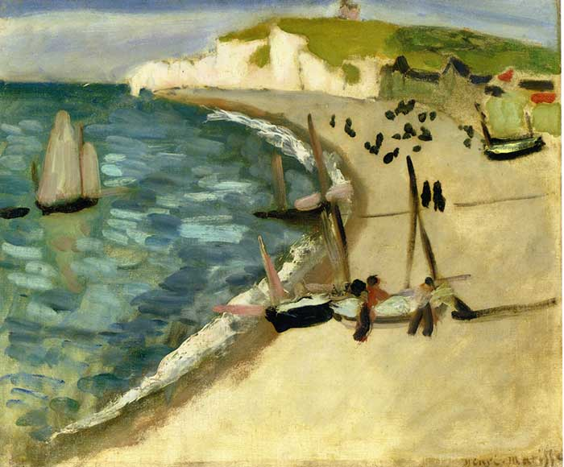

About
For several centuries, Étretat beach was all about fishing activities. From 1840, the fisherfolk of Étretat saw the arrival of more and more visitors, industrialists, bankers, rich merchants from Paris or England.
The action of the waves contributes to cliff falls, dissolves the chalk and polishes the flint, which turns into pebbles in just a few months.
Pebbles are an essential natural protection against swell and storms. They slow down the waves that hit the promenade, the Étretat seawall and limit the risks of marine submersion of the town (a phenomenon it experienced in 1990 and 2016). It is therefore forbidden, under penalty of a fine, to collect them, although you can of course always skim them with the children!

Through the eyes of different artists
Enclosed between the Amont and Aval cliffs, Étretat beach is surrounded by a group of exceptional monumental cliffs, depicted by Monet, Courbet, Matisse and many other painters.
Every year, artistic and cultural events punctuate beach life, such as the Hello Birds festival and the arts day in July, which brings together amateur and professional painters.
Courbet 1870
Monet 1883
Matisse 1920
Activities
Enjoying the sun on the beach while admiring the cliffs or tasting a seafood platter in one of the restaurants of the Perrey (Étretat's promenade seawall) are unique experiences!
Swimming is of course a very popular activity, but don't forget to follow the instructions at the first-aid post. The Voiles et Galets sailing club offers lots of activities from Easter to November: paddle and kayak hire, sailing courses, sailing trips.You can also take part in or attend regattas such as the famous “Régate des périssoires” which brings together these traditional Étretat boats every year. You can also walk or fish in the rockpools at the foot of the cliffs.